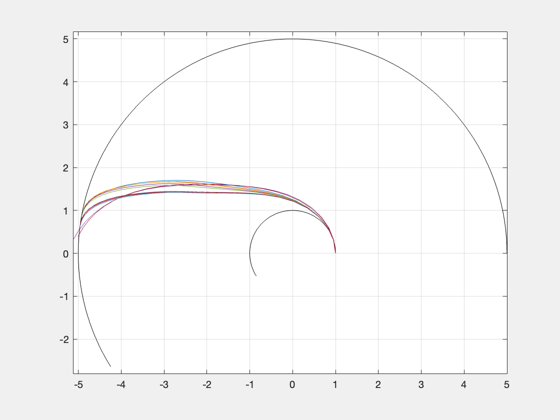
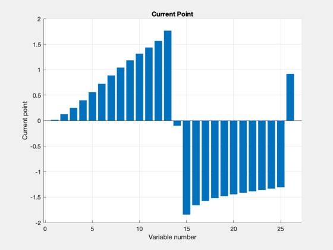
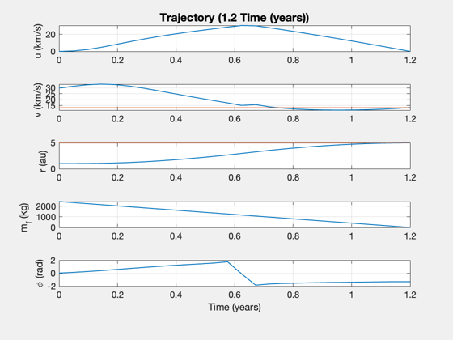
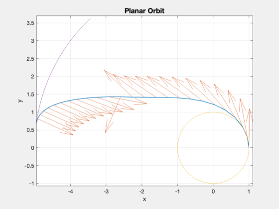

Jupiter planar optimization
Compute the shortest possible trip to Jupiter given the engine configuration. Compare the fuel with a straight-line computation to see the savings. ------------------------------------------------------------------------- See also: PlanarHelioOptimal, SimulatePlanarHelioTrajectory, StraightLineReport, ComputeDuration, ComputeThrust, FuelMass -------------------------------------------------------------------------
Contents
%-------------------------------------------------------------------------- % Copyright (c) 2018 Princeton Satellite Systems, Inc. % All rights reserved. %--------------------------------------------------------------------------
Setup
au = Constant('au'); year = 365.25*86400; uExhaust = 81; % km/s sigma = 750; % W/kg eta = 0.2; % Total fusion power to thrust payload = 1000; % payload mass (kg) nYears = 1.2; % transit time in years fTank = 0.04; dAU = 5; repeatPrevious = false;
Shortest possible trip
d = PlanarHelioOptimal; d.sigma = sigma; % specific power, W/kg d.eta = eta; % thrust efficiency d.uE = uExhaust; % exhaust velocity, km/s d.f = fTank; % fuel structural fraction (tanks) tRet = nYears*year; d.r0 = 1*au; d.rF = dAU*au; d.tF = nYears*year; d.mP = payload; % payload mass (kg) d.scale = [1;1e3;1e3]; % [distance;vel;vel] d.nPts = 25; if repeatPrevious [phi, thrust, t, data] = PlanarHelioOptimal( d, 4000, 'iter-detailed', thrust1, phi1 ); else [phi, thrust, t, data] = PlanarHelioOptimal( d ); end [~,x1] = SimulatePlanarHelioTrajectory( data.mD, data.mF, thrust, d.uE,... d.r0, d.rF, d.mu, phi, t ); phi1 = phi; thrust1 = thrust; data1 = data; h1 = findobj('name','Optimization PlotFcns'); set(h1,'name','Fast Jupiter Trip Optimization') data1.fmincon ret.dT = d.tF; ret.dTheta = data.xEnd(end); fprintf('Trip duration: %g days\n',d.tF/86400); fprintf('Trip angle: %g deg\n',ret.dTheta*180/pi); rXY = x1(1,:).*[cos(x1(2,:));sin(x1(2,:))]; dX = rXY(:,2:end) - rXY(:,1:end-1); s = sum(Mag(dX)); fprintf('Total distance traveled: %g AU\n\n',s); StraightLineReport(data) repeatPrevious = true;
5.1115 9.9186 23.302 5.1317 3.5527e-13
5.1115 9.9186 23.302 5.1317 3.5527e-13
First-order Norm of
Iter F-count f(x) Feasibility optimality step
0 53 4.865448e+03 1.970e+07 5.378e+02
1 108 4.171010e+03 3.549e+06 4.750e+02 8.971e-01
4.1932 9.5172 22.829 5.0237 1.5632e-13
2 168 4.767780e+03 3.412e+06 4.705e+02 2.379e+00
4.9824 1.5628 10.657 4.9772 -3.6948e-13
3 227 4.741207e+03 2.961e+06 1.737e+02 7.495e-01
4.9472 1.01 12.316 4.9802 -7.9581e-13
4 285 4.842135e+03 1.990e+06 1.828e+02 3.908e-01
5.0807 0.62023 12.604 4.9867 -2.2737e-13
5 343 4.924308e+03 1.345e+06 1.852e+02 3.930e-01
5.1894 0.29873 12.87 4.991 -2.4158e-13
6 401 4.991922e+03 8.142e+05 1.682e+02 3.901e-01
5.2788 0.061956 13.144 4.9946 -5.6843e-13
7 459 4.973018e+03 5.578e+05 1.665e+02 8.964e-01
5.2538 0.0030134 13.29 4.9963 -6.8212e-13
8 520 4.897525e+03 3.373e+05 1.172e+02 3.861e-01
5.154 0.1605 13.279 4.9977 -2.8422e-13
9 581 4.935283e+03 4.879e+03 1.186e+01 2.046e-01
5.2039 0.050234 13.304 5 -6.9633e-13
10 648 4.947551e+03 4.450e+03 7.227e+00 2.927e-02
5.2201 0.020157 13.314 5 9.2371e-13
11 707 4.953658e+03 1.517e+03 6.578e+00 1.405e-02
5.2282 0.0056316 13.318 5 -3.979e-13
12 767 4.955924e+03 5.198e+02 6.242e+00 8.426e-03
5.2312 -1.5707e-05 13.32 5 -1.1369e-13
13 826 4.955202e+03 6.328e+00 5.345e+00 1.989e-02
5.2302 -2.4348e-07 13.32 5 1.279e-13
14 891 4.954606e+03 3.807e+00 4.722e+00 1.735e-02
5.2294 -1.4516e-07 13.32 5 -8.5265e-13
15 952 4.954045e+03 3.459e+00 4.158e+00 1.732e-02
5.2287 -1.3066e-07 13.32 5 0
16 1011 4.953518e+03 3.146e+00 3.640e+00 1.728e-02
5.228 -1.1818e-07 13.32 5 8.1002e-13
17 1070 4.953026e+03 2.852e+00 3.163e+00 1.725e-02
5.2273 -1.0672e-07 13.32 5 -2.1316e-13
18 1129 4.952567e+03 2.568e+00 2.726e+00 1.722e-02
5.2267 -9.575e-08 13.32 5 6.6791e-13
19 1188 4.952141e+03 2.289e+00 2.328e+00 1.718e-02
5.2262 -8.503e-08 13.32 5 3.4106e-13
20 1247 4.951748e+03 2.011e+00 1.965e+00 1.715e-02
5.2257 -7.4497e-08 13.32 5 3.4106e-13
21 1306 4.951388e+03 1.736e+00 1.638e+00 1.711e-02
5.2252 -6.4209e-08 13.32 5 -1.009e-12
22 1367 4.951060e+03 1.462e+00 1.477e+00 1.707e-02
5.2247 -5.4199e-08 13.32 5 -4.9738e-13
23 1428 4.950764e+03 1.194e+00 1.299e+00 1.702e-02
5.2244 -4.4592e-08 13.32 5 -1.4637e-12
24 1489 4.950499e+03 9.346e-01 1.180e+00 1.698e-02
5.224 -3.5521e-08 13.32 5 2.1316e-13
25 1550 4.950265e+03 6.865e-01 9.993e-01 1.693e-02
5.2237 -2.708e-08 13.32 5 1.0374e-12
26 1611 4.950062e+03 4.559e-01 8.186e-01 1.689e-02
5.2234 -1.9465e-08 13.32 5 -5.6843e-13
27 1672 4.949888e+03 2.451e-01 7.498e-01 1.684e-02
5.2232 -1.2741e-08 13.32 5 3.5527e-13
28 1733 4.949744e+03 5.768e-02 5.673e-01 1.679e-02
5.223 -7.04e-09 13.32 5 3.2685e-13
29 1798 4.949642e+03 7.241e-02 4.210e-01 1.466e-02
5.2229 -1.5227e-09 13.32 5 -1.1369e-13
30 1863 4.949571e+03 1.076e-01 3.946e-01 1.280e-02
5.2228 5.7341e-10 13.32 5 3.979e-13
First-order Norm of
Iter F-count f(x) Feasibility optimality step
31 1924 4.949516e+03 1.616e-01 2.524e-01 1.278e-02
5.2227 1.9371e-09 13.32 5 -1.4637e-12
32 1985 4.949495e+03 3.012e-02 2.329e-01 6.385e-03
5.2227 4.9739e-10 13.32 5 -8.1002e-13
33 2050 4.949479e+03 2.494e-02 2.055e-01 5.586e-03
5.2227 4.5337e-10 13.32 5 -2.2737e-13
34 2111 4.949467e+03 3.105e-02 1.412e-01 5.587e-03
5.2226 6.1009e-10 13.32 5 3.4106e-13
35 2170 4.949457e+03 4.044e-02 1.219e-01 5.592e-03
5.2226 8.3317e-10 13.32 5 4.6896e-13
36 2239 4.949454e+03 6.252e-03 9.022e-02 2.675e-03
5.2226 1.3988e-10 13.32 5 -1.0658e-12
37 2304 4.949451e+03 4.992e-03 7.521e-02 2.344e-03
5.2226 1.0442e-10 13.32 5 -5.6843e-13
38 2365 4.949450e+03 6.220e-03 6.758e-02 2.351e-03
5.2226 1.538e-10 13.32 5 -5.6843e-13
39 2424 4.949448e+03 7.336e-03 5.201e-02 2.381e-03
5.2226 1.2877e-10 13.32 5 9.0949e-13
40 2485 4.949448e+03 8.472e-04 6.285e-02 1.269e-03
5.2226 4.2818e-11 13.32 5 3.5527e-13
41 2550 4.949447e+03 3.256e-04 4.264e-02 1.091e-03
5.2226 1.6545e-11 13.32 5 8.1002e-13
42 2615 4.949447e+03 7.367e-05 5.345e-02 9.463e-04
5.2226 4.5457e-12 13.32 5 -3.5527e-13
43 2680 4.949447e+03 3.350e-05 3.640e-02 8.263e-04
5.2226 1.0675e-11 13.32 5 2.1316e-13
44 2745 4.949447e+03 3.624e-05 4.037e-02 7.193e-04
5.2226 -9.5923e-13 13.32 5 -7.816e-13
45 2810 4.949447e+03 3.576e-07 2.850e-02 6.299e-04
5.2226 4.7793e-12 13.32 5 -1.4211e-14
46 2881 4.949447e+03 4.184e-05 3.082e-02 4.996e-04
5.2226 -1.8296e-12 13.32 5 6.6791e-13
47 2946 4.949446e+03 6.676e-06 2.103e-02 4.375e-04
5.2226 2.1108e-12 13.32 5 3.4106e-13
48 3011 4.949446e+03 1.597e-05 2.377e-02 3.822e-04
5.2226 -6.5814e-13 13.32 5 -1.0232e-12
49 3076 4.949446e+03 2.265e-06 1.592e-02 3.347e-04
5.2226 8.3933e-13 13.32 5 -1.0658e-12
50 3141 4.949446e+03 3.457e-06 1.688e-02 2.916e-04
5.2226 -9.0594e-14 13.32 5 -2.7001e-13
51 3206 4.949446e+03 1.669e-06 1.313e-02 2.554e-04
5.2226 3.2641e-13 13.32 5 2.1316e-13
52 3271 4.949446e+03 1.073e-06 1.202e-02 2.223e-04
5.2226 8.2157e-14 13.32 5 -9.9476e-14
53 3334 4.949446e+03 2.635e-05 1.713e-02 3.870e-04
5.2226 5.409e-13 13.32 5 -1.4211e-14
54 3395 4.949446e+03 3.779e-05 7.795e-03 3.857e-04
5.2226 1.2492e-12 13.32 5 -1.1369e-13
55 3456 4.949446e+03 4.661e-05 9.198e-03 3.847e-04
5.2226 4.7695e-13 13.32 5 -1.4211e-14
56 3517 4.949446e+03 5.531e-05 5.281e-03 3.846e-04
5.2226 1.2714e-12 13.32 5 -5.6843e-13
5.2226 1.2714e-12 13.32 5 -5.6843e-13
Feasible point with lower objective function value found, but optimality criteria not satisfied. See output.bestfeasible..
Optimization completed: The relative first-order optimality measure, 6.982872e-06,
is less than options.OptimalityTolerance = 1.000000e-05, and the relative maximum constraint
violation, 2.808053e-12, is less than options.ConstraintTolerance = 5.000000e-05.
Planar optimization results:
----------------------------
Destination: 5.0 AU
sigma: 750 W/kg
uE: 81 km/s
eta: 0.2
f: 0.04
Duration: 438.3 days
Thrust: 5.2 N
Distance error: 0.000 km
Velocity errors: [1.27143e-12;-4.70202e-12] km/s
Payload: 1000 kg
Engine: 1410.1 kg
Dry mass: 2507.77 kg
Fuel: 2441.67 kg
Total mass: 4949.45 kg
Total DV: 55.0704 km/s
Power: 1.05758 MW
Mars Angle: 172.094 deg
Earth Angle: 432 deg
ans =
struct with fields:
iterations: 56
funcCount: 3517
constrviolation: 5.5313e-05
stepsize: 0.00038465
algorithm: 'interior-point'
firstorderopt: 0.0052806
cgiterations: 242
message: 'Local minimum found that satisfies the constraints.↵↵Optimization completed because the objective function is non-decreasing in ↵feasible directions, to within the value of the optimality tolerance,↵and constraints are satisfied to within the value of the constraint tolerance.↵↵<stopping criteria details>↵↵Optimization completed: The relative first-order optimality measure, 6.982872e-06,↵is less than options.OptimalityTolerance = 1.000000e-05, and the relative maximum constraint↵violation, 2.808053e-12, is less than options.ConstraintTolerance = 5.000000e-05.'
bestfeasible: [1×1 struct]
Trip duration: 438.3 days
Trip angle: 172.094 deg
Total distance traveled: 6.92602 AU
Report:
Inputs -- --
Payload 1000 kg
Travel time 1.20 years
Specific Power 0.75 kW/kg
Exhaust velocity 81 km/s
Thrust Efficiency 0.20
Fuel Fraction 0.04
Outputs -- --
Thrust 5.22 N
Total Mass 4949.45 kg
Mass Dry 2507.77 kg
Mass Engine 1410.10 kg
Mass Fuel 2441.67 kg
Flow Rate 0.06 g/s
Power 1.06 MW
Delta V 55.07 km/s
Final Distance 5.00 AU
Final Velocity 13.32 km/s
    Compare to straight line with same power
dS = d; dS.dF = d.rF; dS.v0 = 0; dS.mE = []; [tMin,~,dataS] = ComputeDuration( data.p, dS ); fprintf('\nStraight line duration: %.3f year\n',tMin/86400/365.25) fprintf('Straight line fuel mass: %.3f kg\n',dataS.mF) fprintf('Planar savings: %.1f %%\n',(dataS.mF-data.mF)/dataS.mF*100) %-------------------------------------- % $Id: e1734010364c2d21bd51b81981c2b43b97570793 $
Straight line duration: 1.500 year Straight line fuel mass: 3051.139 kg Planar savings: 20.0 %